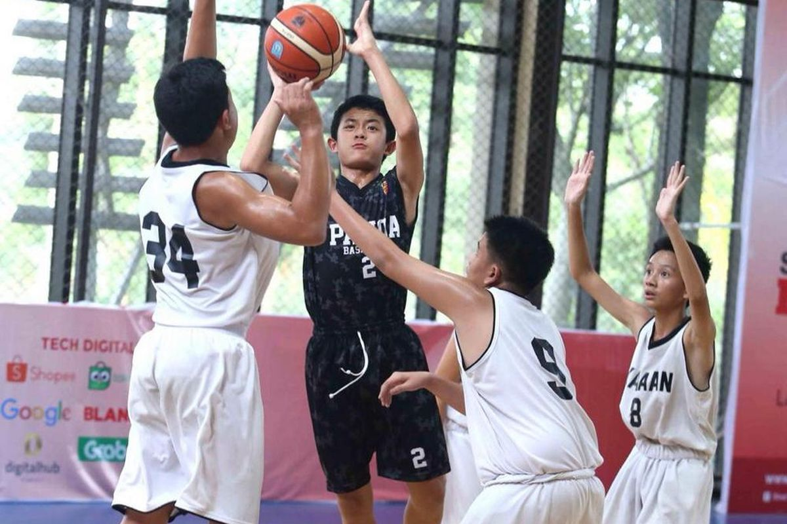
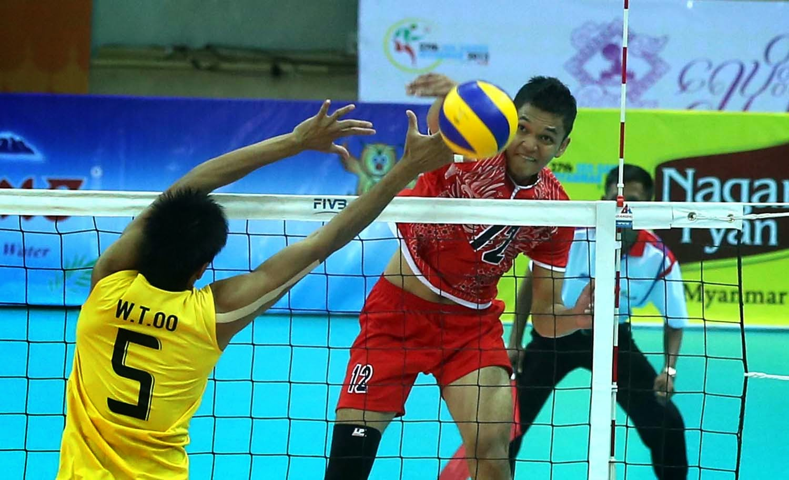
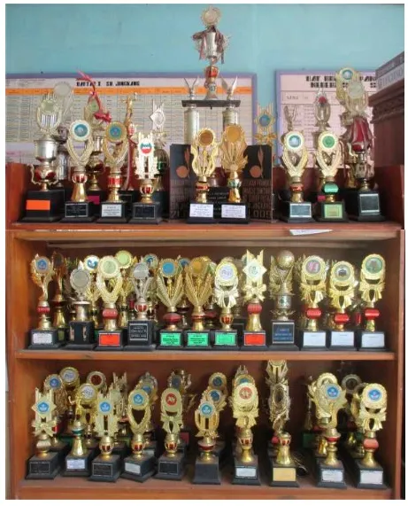
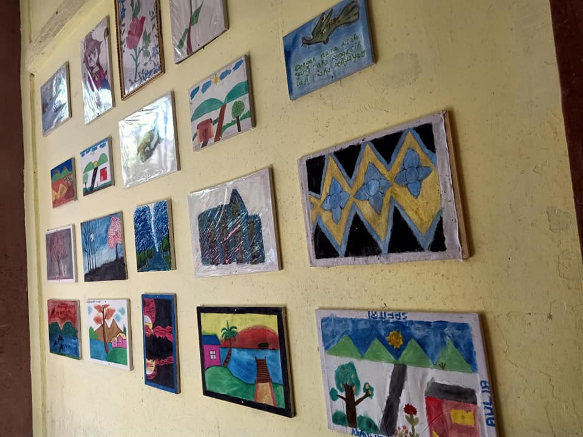

SMPN 14 TANGERANG SELATAN
Insan Cerdas, Berkarakter, dan Berbudaya Lingkungan
📍 Jl. AMD No. 15-16, Kelurahan Pondok Kacang Barat, Kota Tangerang Selatan
Jelajahi Profil
Insan Cerdas, Berkarakter, dan Berbudaya Lingkungan
📍 Jl. AMD No. 15-16, Kelurahan Pondok Kacang Barat, Kota Tangerang Selatan
Profil Singkat: Berpedoman pada visi “Insan Cerdas, Berkarakter, dan Berbudaya Lingkungan", serta misi sekolah yang dijadikan landasan dalam menentukan tujuan dan kebijakan sekolah, SMP Negeri 14 Tangerang Selatan selalu berkembang menjawab tantangan zaman. Hal ini tercermin dari program-program dan kegiatan sekolah, sehingga mencetak generasi-generasi unggul dan handal.
Visi Sekolah: “CERIA” (Cerdas, Empati, Religius, Inovatif, dan Aktif), dengan mengusung prinsip utama “adab dulu, ilmu mengikuti”.
Misi Sekolah:
Klik pada gambar di atas untuk menyaksikan video profil lengkap fasilitas dan kegiatan belajar di sekolah.
berguna untuk mengembangkan keterampilan olahraga, membentuk karakter disiplin dan kerja sama tim, serta menjaga kebugaran fisik siswa.

🏀 Basketberguna untuk mengembangkan keterampilan olahraga, membentuk karakter disiplin dan kerja sama tim, serta menjaga kebugaran fisik siswa.

🏐 VolleyBallberguna untuk mengembangkan keterampilan olahraga, membentuk karakter disiplin dan kerja sama tim, serta menjaga kebugaran fisik siswa.

Prestasi gemilang siswa kejuruan dalam bidang olahraga.

Hasil karya lukisan siswa siswi Smpn 14 Tangerang Selatan.